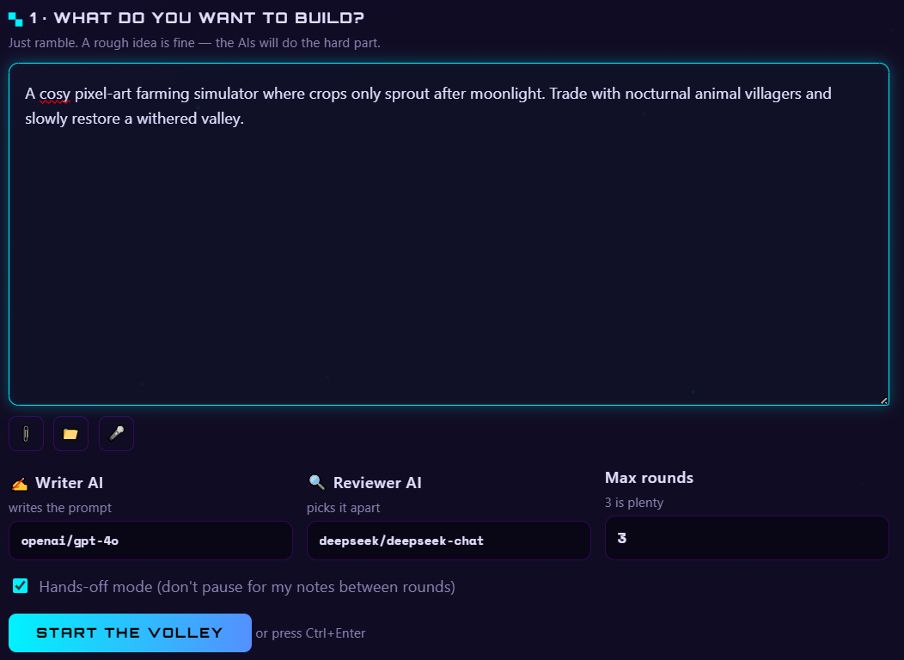

VolleyPrompt
Stop copy-pasting between chatbots. Two AIs volley your prompt until it's perfect.
Free · open source (MIT) · bring your own OpenRouter key

✍ 1 · Write
Ramble your game or app idea. A Writer AI turns it into a structured prompt.
🔍 2 · Review
A different Reviewer AI rips it apart: gaps, contradictions, scope creep.
🎉 3 · Copy
Repeat until approved — or add your own notes — then copy the final prompt.